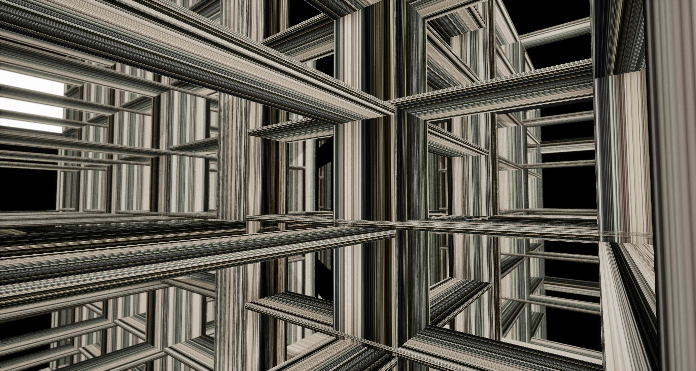
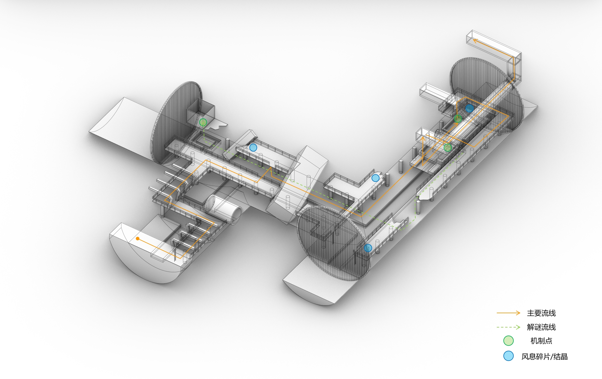
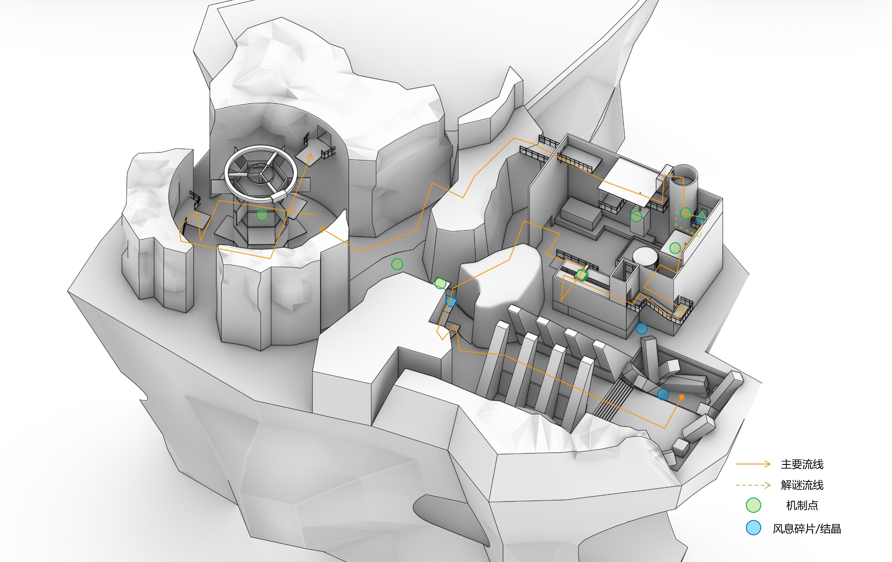
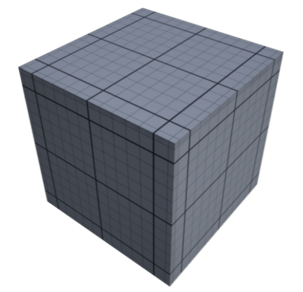
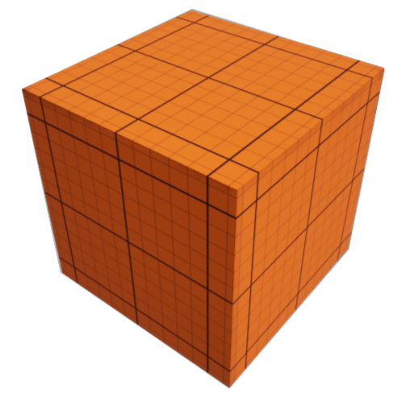

LAPUTA:
SHATTERED
崩毁的拉普达 · 线性箱庭探索与空间解谜
LAPUTA: SHATTERED · Vertical Box-Garden Exploration · Level Design
失落的空中遗迹「拉普达」因核心引力失控而崩解为错落悬浮的立体废墟。玩家在探索过程中将逐步解锁「升天术（纵向穿顶越层）」、「平台术（动态驻留支点）」以及「空间弓（驱动特定体块）」三大核心空间交互机制。本关卡围绕垂直向度（Z轴）的动线拓扑展开，通过“机制教学—单机制验证—多机制复合解谜”的三段式节奏递进，将离散的浮空岛屿重新串联，最终实现立体空间动线与视觉引导的双重闭环。
 OVERALL SPATIAL MASSING · 关卡体块与立体拓扑总览
OVERALL SPATIAL MASSING · 关卡体块与立体拓扑总览
实机白盒流程演示
Whitebox & Gameplay Walkthrough
核心空间机制
Ascend
升天术 · 纵向穿顶越层垂直空间穿行核心能力。玩家对准头顶有效天花板表面发射垂直射线，判定通过后角色可潜入上方几何体块并从顶部地面跃出，打破传统水平爬梯的繁琐动线。

收集物与技能强化系统
Wind Essence
风息碎片 · 风息结晶围绕「升天术」与「平台术」构建的关卡资源循环系统。玩家收集散落的风息碎片自动凝结为风息结晶，消耗结晶即可突破基础机制限制，实现连续穿层或双平台接力。
- 升天术强化（刷新 CD）：消耗 1 颗结晶立即重置冷却，支持空中连续二次纵向穿层
- 平台术强化（双倍平台术）：消耗 1 颗结晶突破单平台上限，同时召唤第 2 块平台远距接力
- 关键解谜节点固定配置保底「风息结晶」，确保主线解谜资源供给
- 动态防卡死刷新：当角色身上碎片少于 3 个时，场景保底结晶将自动刷新重生，杜绝资源枯竭
空间动线与流程规划
Spatial Flow & Level Routing
整体关卡节奏曲线
Level Pacing & Emotion Curve
机制递进关系图
L1 幽水与余烬 → L2 踏空之径 → L3 虚实之隙 · 机制递进路径
燃烧平台引入
L1 关卡元素引入 · 周期性火焰陷阱与基础升天术时机判断
风息结晶使用
初次解锁风息结晶，教学刷新 CD 并连续使用两次升天术
死亡区域引入
引入赤湖，明确行动边界与高空坠落惩罚
平台术支点
升天术 + 平台术叠加使用，空中构建临时驻留跳板
平台堵塞气流
L2 关卡元素引入，教学玩家生成平台阻挡气流制造通路
平台改变气流强度
生成平台堵塞一侧气流，使得另一侧气流压强倍增
风之教堂三层解谜
平台堵塞气流 + 平台改变气流强度 + 风息结晶使用 + 升天术
镜像空间与构件驱动
L3 关卡元素引入 · 远距射击开启镜像通道与平推/旋转体块
激光盒解谜
升天术 + 平台术 + 空间弓驱动 + 镜像空间
试炼B区柱廊解谜
升天术 + 平台术 + 空间弓驱动 + 风息结晶使用
Laputa之核解谜
升天术 + 平台术 + 空间弓箭驱动 · 终局三维魔方空间重构
纵向视线牵引 · 升天术教学与高度阈值建立
Vertical Sightline Guidance · Ascend Tutorial & Jump Threshold Perception
角色苏醒于拉普达底层的封闭石井底部，四周水平出路被彻底封死，唯独正上方透出天光与悬挑石板——以纯粹的建筑空间形态迫使玩家抬头观察并建立纵向探索意识。
场景情绪引导 · 垂直井道与天光牵引
利用底层的幽暗压抑与高处井口的高对比度冷光形成强烈视觉落差，无需 UI 箭头提示即可自然引导玩家将镜头向上抬升，确立本作围绕 Z 轴展开的核心空间基调。
升天术教学 · 基础穿层建立
在一处低矮平整的悬挑天花板下解锁「升天术」。玩家站在地面即可直接看到蓝绿色光斑浮现，一键完成首次垂直穿顶跃迁，建立“天花板即通路”的空间直觉。
跳跃极限引导 · 跳跃感知与起跳升天术
当玩家发现无法直接使用升天术来到中央装置上方时，环绕一周会发现高低错落的石墩，这些石墩让玩家直到角色的跳跃极限高度与距离。
L0 初始之地的核心任务是「扭转传统平面寻路惯性」与「校准距离感」——通过封死水平方向迫使玩家向上看，再用两级不同高度差的平台对比（第一阶地面直达 → 第二阶必须起跳触发），让玩家在 3 分钟内无需阅读繁琐文字即可凭体感掌握升天术的精确判定边界。
L1 场景动线拆解
上半程下水管道压抑闭环 vs 下半程空岛开阔探索

前半段 · 下水管道与水阀中枢
地下空间给玩家压抑空间感受，动线以寻路与水位控制为主。通过较高检修台限制升天术的释放条件，只能通过寻找碎石使用升天术，积累玩家探索压抑感。

后半段 · 燃烧宅邸与水塔解谜
从通风管道跃出后视野豁然开朗。动线转为围绕火元素陷阱的立体跨越，在宅邸完成对玩家水浇灭火的教学，最终水塔解谜作为视觉与玩法的高潮收尾。
L1 关卡节奏曲线
先抑后扬的极致释放 · 能力剥夺与瞬时高潮
L1 的核心体验建立在极其克制的“剥夺感”上。利用下水管道较高的检修台限制升天术的释放条件，引导玩家收集风息碎片；当压抑感不断累积，通过一个小机制让玩家解锁风息碎片的使用，一瞬间赋予玩家“双倍升天术”的连续穿层权利。这种从技能束缚到瞬间自由的反差，创造了无可比拟的瞬时爽感。

基础材质·灰色材质
灰色材质：关卡中最常见的材质，贯穿于关卡始终。

视觉引导层 · 橘色可交互材质
橘色材质 = 让玩家意识到这里往往存在机制，通过解谜可以开启通路。一眼识别，无需试探。